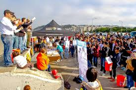
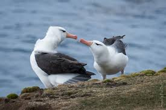

Conheça alguns dos principais projetos e iniciativas para o desenvolvimento sustentável no Brasil e no mundo
Boomera Startup – transforma resíduos recicláveis em matéria-prima, apoiando mais de 150 cooperativas de catadores pelo Brasil.
Projeto Albatroz (SP, SC, RJ, RS) – protege aves marinhas como albatrozes e petréis, com pesquisa, educação e políticas públicas.
#TeamTrees – campanha global com mais de 20 milhões de árvores plantadas, liderada por influenciadores como MrBeast.

Projetos na Baixada Santista (SP):
- Praia Grande Natural (2014): educação sobre manguezais com escolas e comunidade.
- Mutirões “Orla Limpa” e manejo do manguezal com moradores e ONGs.
- Revitalização urbana com plantio de vegetação nativa e oficinas ambientais.